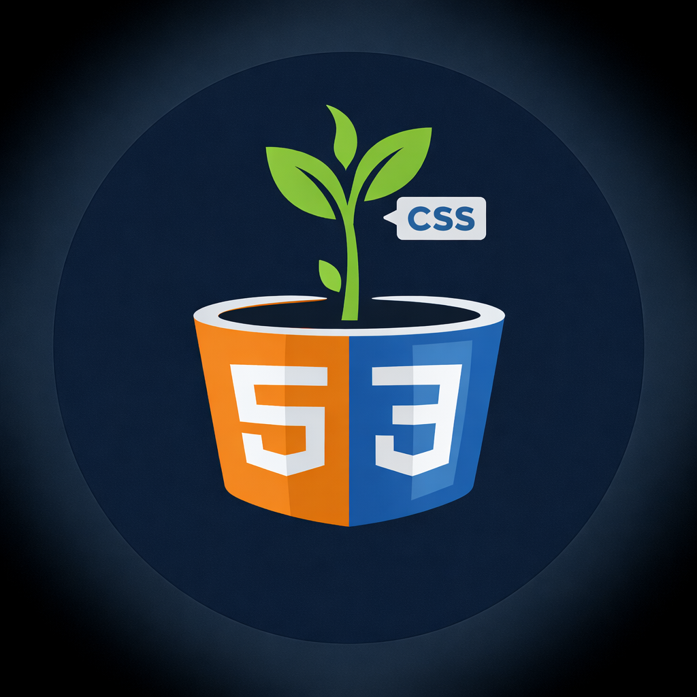
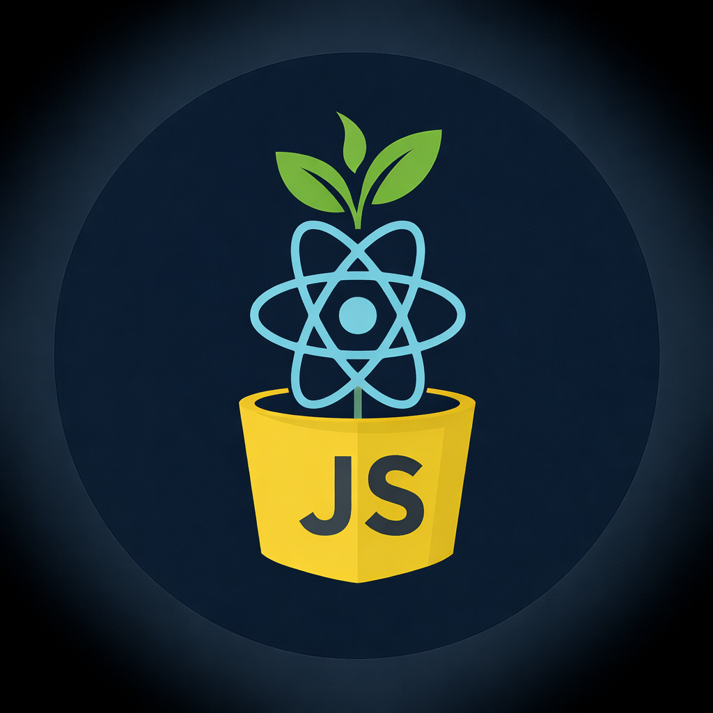

Spring Boot • REST APIs • PostgreSQL/MySQL • JUnit
Java – Cultivating Clean Code and Scalable Growth
As part of my journey into full-stack development, I'm currently diving deep into the fundamentals and practices of Java programming. While still in the early stages, I’m actively learning object-oriented programming, clean code principles, and how to build robust, maintainable applications using tools like IntelliJ IDEA and Maven.
Through a structured course, I’m gaining hands-on experience with Java syntax, data structures, and common frameworks, while also working on small-scale projects that simulate real-world development workflows. As I progress, this section will grow to include links to projects and code samples that showcase my understanding and evolution as a Java developer.

HTML5 • CSS3 • Bootstrap • Responsive Design
HTML/CSS – Organic Code for Human Interfaces
My journey into web development began with learning how the web works from the ground up. I'm currently focused on writing semantic HTML and styling responsive layouts using CSS. I’m exploring layout techniques such as Flexbox and Grid, and gaining hands-on experience with tools like Visual Studio Code and browser dev tools.
If you’d like to connect, feel free to reach out!
© 2026 Bo Kalebsson

React • JavaScript • React Hook Form • API Integration
React & JavaScript – Growing Dynamic User Experiences
React and JavaScript have played an important role in my journey into modern web development. Through building interactive user interfaces, working with components, handling state, and connecting frontend applications to backend APIs, I’ve started to develop a stronger understanding of how web applications are structured and how different parts work together.
So far, I’ve worked with concepts such as reusable components, form handling, client-side routing, and dynamic rendering. These experiences have helped me understand the value of writing clean, maintainable frontend code and creating solutions that are both functional and user-friendly. As I continue to grow, I want to keep strengthening my frontend skills and become even more confident in building clear, responsive, and well-structured applications.
Student aiming to become a Fullstack Developer in Java
Background:
After several years of working as a chef and
in sales — roles that taught me a lot about working under pressure,
problem-solving, and communication, I realized I wanted to do
something different. I've always been curious about technology and how
things work behind the scenes, so I made the decision to change
direction and start my journey toward becoming a fullstack developer.
Studying:
I'm currently studying to become a Fullstack
Developer with a focus on Java. The course covers everything from
building user interfaces with HTML, CSS, and JavaScript, to backend
development in Java. Along the way, we’ve also built a strong
foundation in tools like Git and GitHub, which we use daily to
collaborate and manage our code. It’s a hands-on and fast-paced
learning experience — and I’m really enjoying the process.
Portfolio:
I created this portfolio to document my journey
into tech and to share what I’ve been learning along the way. It’s a
space where I can showcase the projects I’ve worked on, especially in
areas I find exciting or want to explore more. For me, it’s not just
about showing finished results — it’s also about tracking progress and
staying curious.